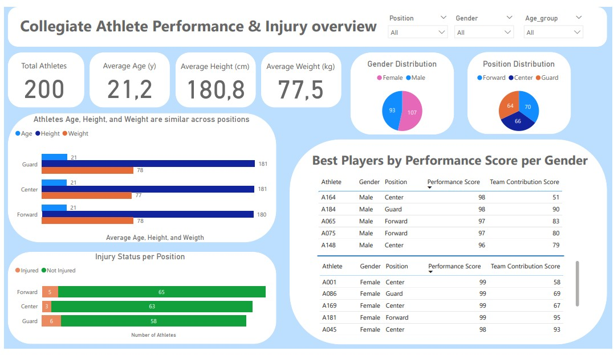
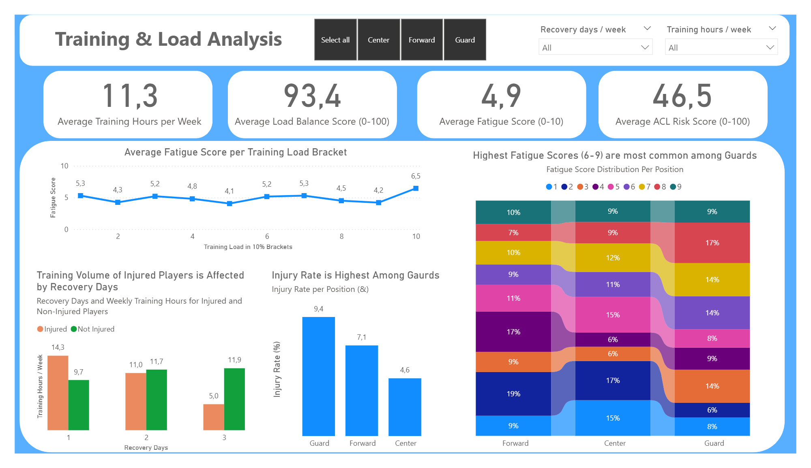
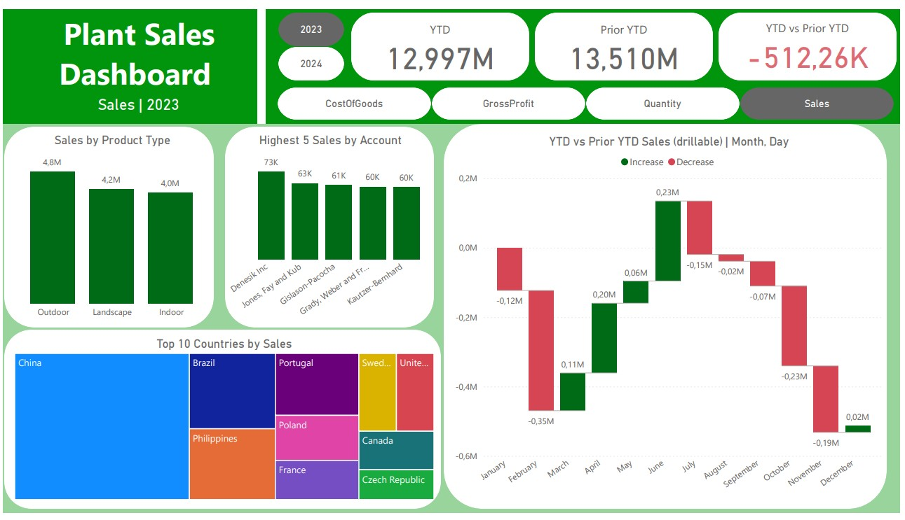
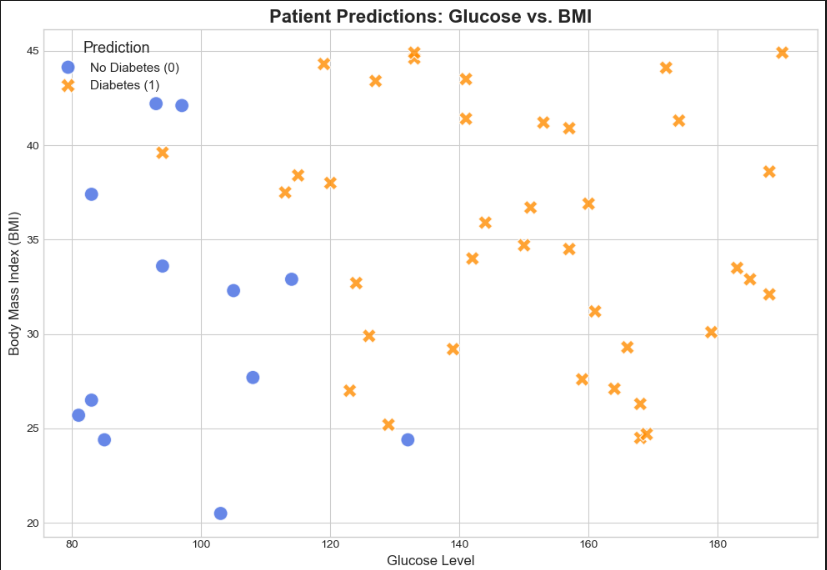
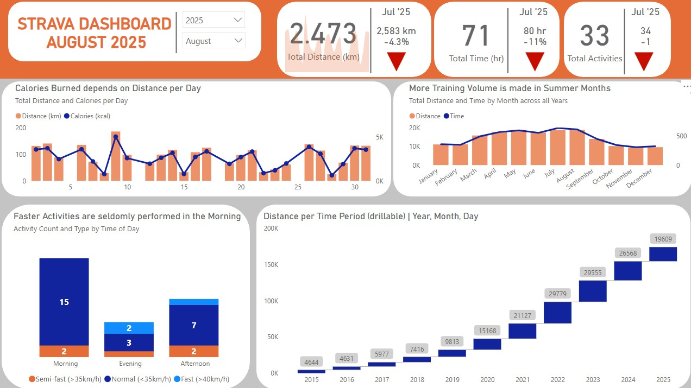
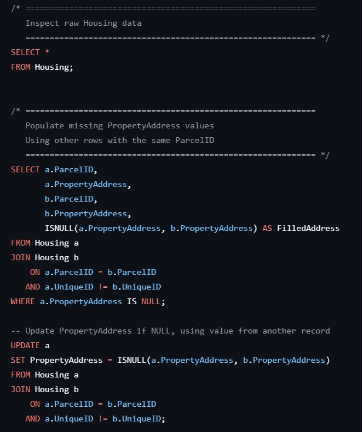
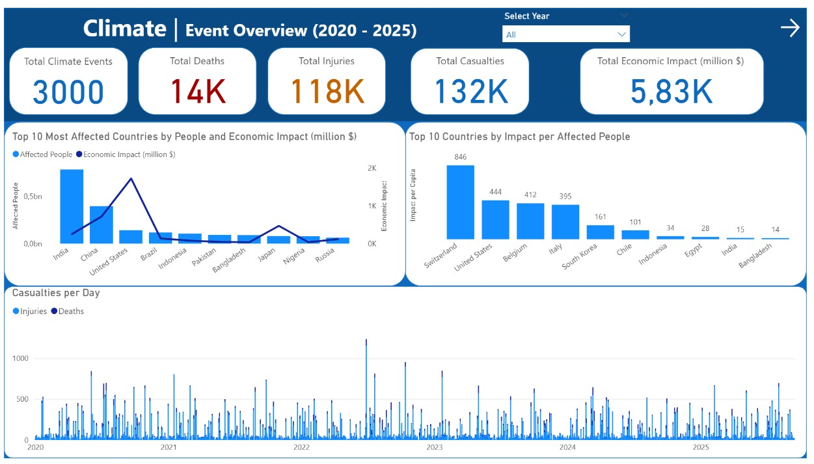
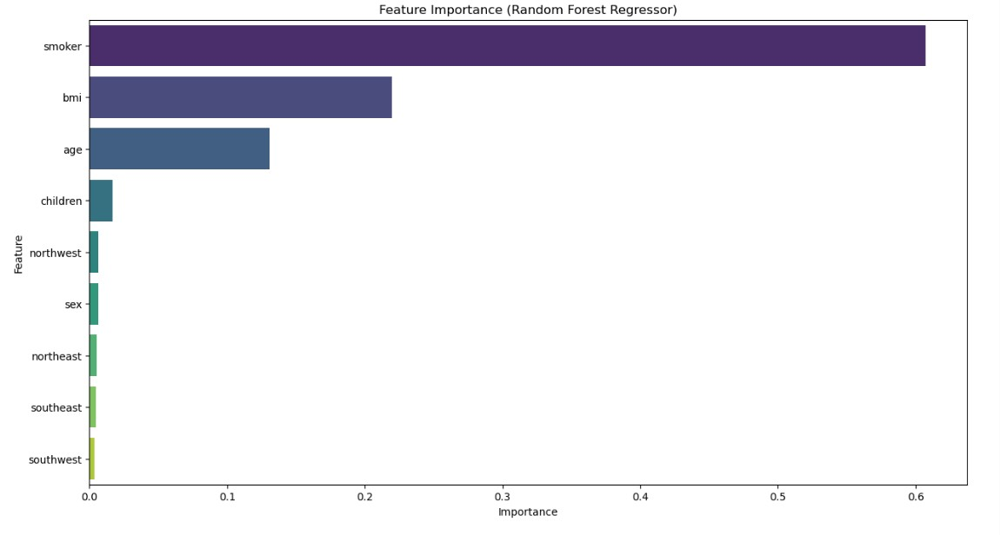
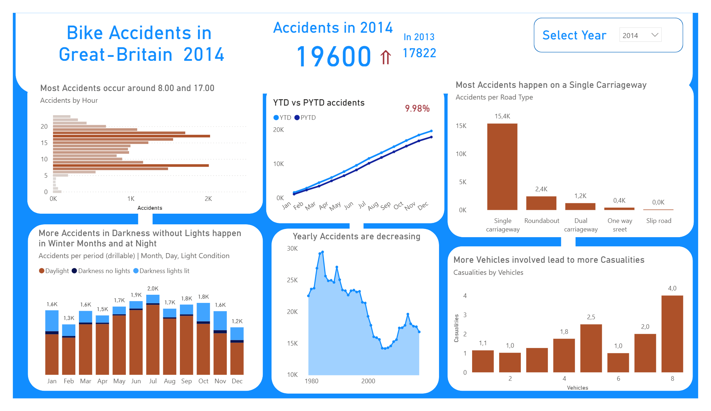

Tools: SQL, Power BI
This project analyzes a synthetic dataset designed to study the impact of training schedules, fatigue,
and recovery on injury risks and athletic performance in a collegiate sports environment and presents
the insights in a dashboard.
The dataset contains athlete demographics, training intensity, match schedules, fatigue levels,
and performance metrics, showing SQL capabilities for real-world analytics.
The project demonstrates SQL skills across data modeling, exploratory analysis, and advanced analytical queries.
Take a look at the project to view the full SQL queries.


Tools: Power BI

This project analyzes global plant sales using Power BI.
The goal was to design a professional, interactive dashboard that provides insights into
revenue, costs, and profitability trends across different countries, product types, and customer accounts.
The workflow included data preparation, transformation, modeling, and visualization.
Tools: Python, Scikit-Learn, Tensorflow

This project analyses medical data and creates a machine learning model that predicts whether or not a patient is at risk for diabetes.
The goal was to analyze the data, construct various machine learning models for classification and finally make a production pipeline for the best model.
Tools: Excel, SQL, Power BI

This project analyzes Strava activity data using Power BI and SQL.
The goal was to create an interactive dashboard that provides insights into user activities,
performance trends, and other key metrics. The workflow included data extraction, transformation,
and visualization.
My personal data was used and the project provides real world insights into monthly progress,
daytime and speed comparisons, and energy expenditure. This provides information to guide training
and nutrition strategies.
Tools: SQL

This project focuses on cleaning and preparing housing data for analysis using SQL.
The goal was to ensure data quality and consistency, making it suitable for further analysis
and visualization. The workflow included filling in or removing missing values,
dealing with address information, standardizing formats and removing duplicates,
Tools: Power BI

This project analyzes climate events data using Power BI.
The goal was to create an interactive dashboard that provides insights into climate disasters,
impact assessments, and other key metrics.
Tools: Python, Scikit-Learn

This project focuses on predicting insurance charges using machine learning techniques in Python.
The goal was to develop a predictive model that can estimate insurance costs based on various factors
such as age, sex, BMI, number of children, and smoking status. Various algorithms including linear regression,
and random forest regression were explored to find the best fit for the data.
Tools: Power BI

This project explores bike accident data from Great Britain, focusing on time-based and contextual patterns such as when and where most accidents occur.
The goal was to analyze trends and relationships between time, light conditions, road types, and number of vehicles involved.